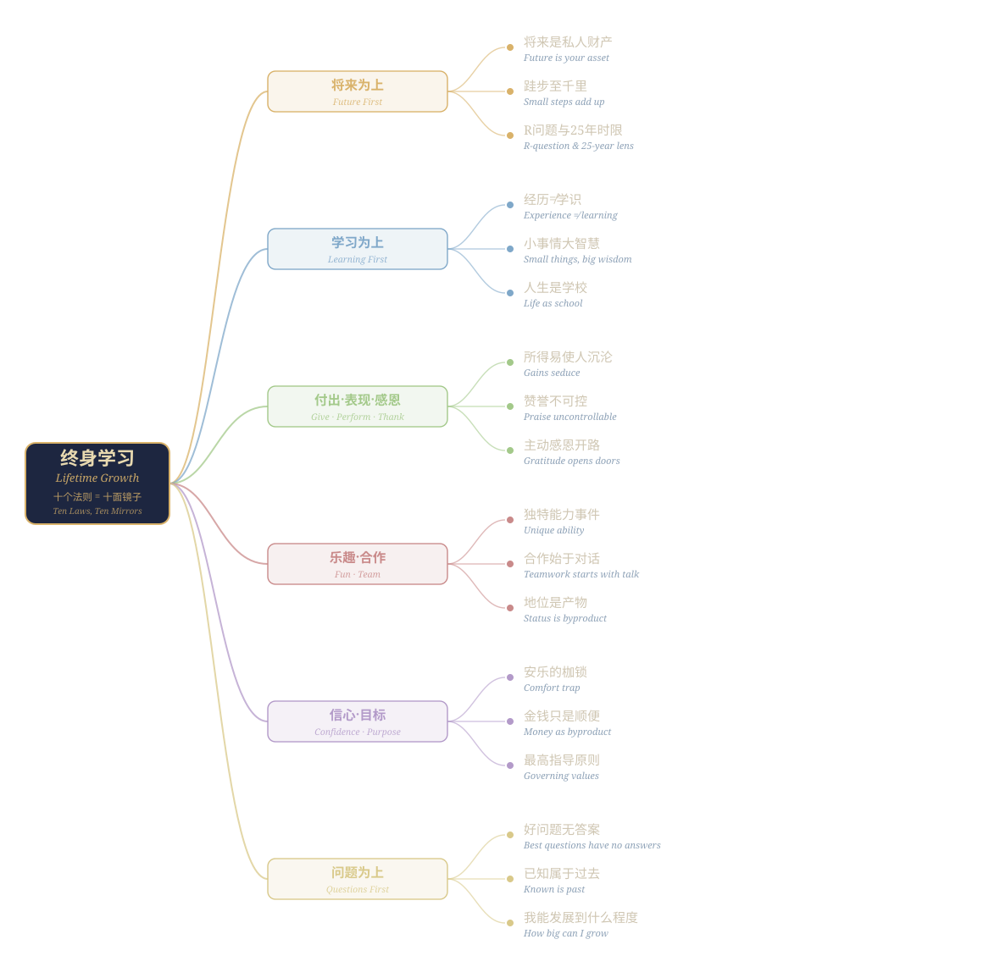

终身学习
〇 · 书籍信息
基本信息
| 书名 | 《终身学习：10个你必须掌握的未来生存法则》——原著 The Laws of Lifetime Growth，源自战略培训公司（Strategic Coach）几十年企业家培训的观察 |
|---|---|
| 作者 | 丹·苏利文（Dan Sullivan）：战略培训公司联合创始人、企业家教练；凯瑟琳·野村：合作者——十条法则全部提炼自与成功企业家一对一工作的现场 |
| 结构 | 10 条法则 + 每条附「如何起步」+ 卷尾 7 个起步问题与「成长聚焦」练习：将来 / 学习 / 付出 / 表现 / 感恩 / 乐趣 / 合作 / 信心 / 目标 / 问题——目录本身就是工具，停滞时瞅一眼即可「不脱轨」 |
| 体裁 | 自助成长书：句式高度统一（「X为上，Y次之」），案例驱动——它把成长写成十面镜子，而不是十味药：法则不改变你，只照见你 |
| 一句话 | 成长的关键不是经验多少，而是注意力放在哪个词上——每条法则前半句是动力词，后半句是陷阱词；读完全书再翻目录，会有一个词突然蹦进你的脑海。 |
一 · 核心主题总览
十条法则背后是四组母题：① 次序即命运
每条法则都是一次排序：将来为上、过往次之；学习为上、经历次之……陷阱词本身并不是坏东西——金钱、赞誉、回报、安稳都有价值；坏的是让它们坐上前排。成长警察不会来抓你，你只会发现自己的成长不再顺利。
② 经历不等于学识
「也许你有大量经历，却在所见、所闻、所做方面并未高明多少。」单有经历并不保证成长——把整个人生看作一所学校，每次经历都是一堂课，定期把经历转化为学识的人才在成长。
③ 安乐是慢性止痛药
「安稳和舒适都是达成目标后令人心醉的副产品，但是，倘若二者被当成奋斗的目标，那人一生的成长立刻戛然而止。」全书对「成功后停滞」的病理诊断：不是失败困住人，是成功困住人。
④ 问题通向未知
「成长是发生在未知领域里的，已知属于过去，待探索的属于未来。」最好的问题往往没有答案——抱着开放的心态承认理解可能有缺陷，学习和进步水到渠成。
二 · 第一段 将来 · 学习 —— 起点与原料—— 私人财产 · 跬步 · 一所学校 ——
16 岁的希尔达
作者之一凯瑟琳的母亲希尔达：家里 8 个孩子的老六，哥哥姐姐都在 16 岁辍学打工。16 岁的她却做了大胆决定——离家出走、靠奖学金住在基督教青年会，读完高中和大学，在讲台上站了 30 年。59 岁确诊癌症晚期后，她把最后几个月用在「死亡教育」上，「她 16 岁就怀揣志向离家出走，她活得很勇敢，而她死得更加英勇」——殡仪馆额外开了侧厅才装下 300 多位不请自来的凭吊者。法则一的操作面藏在这章末尾：问自己一个「R 问题」——3 年后坐在这里回头看，这 3 年里发生了什么令你高兴的事？一个小问题，就把「过往的你」和「将来的你」接上了线。
◆ 语言学习 · 概念 · 将来为上
| 将来=私人财产 | 「将来」尚未发生，只存在于想象中——所以你可以随心所欲塑造它 |
|---|---|
| R问题 | 3 年后回头看现在的自己——建立与美好将来的联系（R 代表「联系」） |
| 成就的扩建 | 写下去年 5–10 个成就，逐一想它的前景——找不出目标时的备用引擎 |
| 25年时限 | 战略培训公司想大事的习惯时间尺度：足够宏大，又不令人却步 |
句型 ｜ 「你如何设计将来，就能拥有多大未来。」——法则一导语是全书的总纲句式：主语是你的设计动作，宾语才轮到命运。
经历不是学识
法则二揭穿一个幻觉：很多人把「活了多年」当成「学了很多」。「也许你有大量经历，却在所见、所闻、所做方面并未高明多少」——真正有大智慧的人，能把微不足道的事情转化成思想和行为上的突破。98 岁的安东尼奥在电视上看到鞋类博物馆的报道，让孙女带他去参观，离开时用西班牙语说：「谢谢你。今天我学到很多东西。」绝大多数成长是小步积累的结果，关键在于脚步不停。
◆ 语言学习 · 概念 · 学习为上
| 经历→学识 | 定期把所遇之事复盘成可复用的认知——法则二的核心动作 |
|---|---|
| 小智慧 | 从小事里提炼大道理的能力——区分「有经历的人」与「在成长的人」 |
| 人生即学校 | 把每一次经历都当成一堂课的隐喻——失败与顺利同样是教材 |
| 成长聚焦 | 卷尾练习：找出十条法则里最该重点突破的那一条 |
习语 ｜ 「小事情，大智慧」——法则二的章节名即成语：眼光向下，学问向上；「 footsteps 不停」的中文表达是「跬步至千里」——荀子的老话被借来给法则一收尾。
三 · 第二段 付出 · 表现 · 感恩 —— 三个关系的次序—— 回报 · 赞誉 · 纽带 ——
所得易使人沉沦
法则三直面人性：「随着你在成功路上越爬越高，回报也会随之而至：收入、赞誉、认可、人气、地位……」它们会引诱你迷恋回报，没有心思考虑付出更多；而「要想保证回报源源不断，唯一的方法就是不要对其考虑太多」。书中「回报并非天经地义」一节更进一步：把回报当理所当然的人，会切断与帮助者的关系——付出是原因，回报是结果；盯着结果的人，往往把原因弄丢了。
◆ 语言学习 · 概念 · 付出为上
| 付出/回报 | 法则三的对偶轴：创造价值放首位，回报自然蜂拥而至 |
|---|---|
| 回报并非天经地义 | 警惕心态：认为世界欠你回报的那一刻，成长就停了 |
| 创造价值 | 唯一的可控变量——帮助别人消除危险、抓住机会、放大长处 |
| 纽带 | 法则五的关键词：与他人连接的关系绳索，越感恩越结实 |
句型 ｜ 「所得易使人沉沦，付出使人成长。」——十字对偶句是全书句式的样板：前半句诊断，后半句处方，一条法则一行字。
赞誉与感恩
法则四的洞察极其锋利：「赞誉令人陶醉，在其诱惑之下，你就会围绕别人的认可和赞美去构建人生，不断重复最初给你带来赞誉的做法，而不是继续前行。」在各个领域中，表现最好的人，是那些总是努力追求更上一层楼的人——不论得到多少赞美。法则五则给出反向案例：很多中途掉队的人，是因为「他们认为成就的取得完全是自己大展神威」——切断与所有帮助者的纽带，就切断了创造力的供给线。
◆ 语言学习 · 概念 · 表现与感恩
| 赞誉陷阱 | 为掌声重复昨天的动作——表现停滞的经典路径 |
|---|---|
| 主动感恩 | 法则五导语：「学会主动感恩，而不是被动拥有」 |
| 谦逊 | 认可别人贡献时的姿态——感恩的三个支点：纽带、承诺、谦逊 |
| 成功心态 | 把成功当起点而非终点——成功本身也可能是成长的陷阱 |
习语 ｜ 「你无法控制他人的赞誉，但你能把握自己的表现。」——控制二分法的教科书表达：把注意力从不可控区搬回可控区；「不断认可别人的付出，你就会自动在心中为更多成功开辟空间」——感恩被写成了扩容操作。
四 · 第三段 乐趣 · 合作 · 信心 —— 动力系统—— 独特能力 · 对话 · 舒适区 ——
独特能力事件
法则六为「玩」正名：有些人坚信成功必须刻苦劳累，对由乐趣而来的收获心怀愧疚——「但在此过程中，他们截断了自己与以下宝藏的联系——活力、创造力、动力」。战略培训公司给这套逻辑起了名字：「独特能力事件」——你最擅长、最有热情、能带来无尽成长机遇的事，正是给你带来乐趣的事。法则七顺势延伸：「合作始于对话」——依恋身份和地位、不愿与别人合作的人，等于给自己的成长加了镣铐。
◆ 语言学习 · 概念 · 乐趣与合作
| 独特能力事件 | 擅长×热情×价值三环交集——做贡献的最好机会 |
|---|---|
| 取乐心态 | 「带着取乐的心态做事，其结果一定不差，甚至更好」 |
| 增大效应 | 自己与别人的才能、机会融合时产生的乘数 |
| 放下身段 | 法则七的操作词：欢迎别人的贡献，而不是囿于个人得失 |
句型 ｜ 「快乐的精神能产生杰出的品质，还能以难以预知的方式鼓舞他人。」——把「有趣」从性格特质升级为生产力要素：好玩不是消遣，是引擎。
安乐的枷锁
法则八的全书高光：丹·泰勒 50 岁生日前 5 周，和团队连做 5 件事——四级五级激流漂流 26 英里、骑行 100 英里、芝加哥马拉松、一天步行 50 英里、游泳 5 英里；全队此前长跑经验是 3–5 英里。另一端是舞蹈演员丽莎：稳定薪水、体面工作，直到梦见旧日舞蹈老师、次日真收到她的邮件——「与舞蹈有关的不是体型，而是心灵」。她当场辞职，演出结束后第 3 天接到爱尔兰制片公司的电话，此后好事源源不断。书自己做了祛魅：「乍看起来好像丽莎的运气很好，可事实上，在她全心全意决定的那一刻，她的成长就开始了」。
◆ 语言学习 · 概念 · 信心为上
| 舒适区 | 法则八的围城：外面是恐惧，里面是停滞 |
|---|---|
| 勇气阶段 | 「决心接受挑战」与「成功成就感」之间的不适期——成长的暂时代价 |
| 4C公式 | 战略培训公司的复盘工具：回顾自己如何培养出新能力，以此类推 |
| 短时休息 | 信心培养的节奏学：休息要短，否则信心会流失 |
句型 ｜ 「把自己赶出舒适区，将信心提升到新的高度；又在这些新层面上舒适地小憩，使它们变成正常状态。」——一推一歇的节拍句：训练—恢复—再训练，肌肉生长的语法被平移到了人生。
五 · 第四段 目标 · 问题 —— 终点与引擎—— 金钱顺便 · 初心 · 七个问题 ——
金钱只是顺便的事
法则九最有说服力的证据来自作者自己的公司：1989 年丹·苏利文和妻子芭布斯为补缴巨额税款创办小组培训项目，此后总结出 3 条「最高指导原则」——「我们所做的每一件事都要有助于团队协作」「始终控制进展的动力」「道不同不相为谋」。靠这三句「不是经营宗旨，而是个人价值宗旨」的筛选器，公司收入增长了 100 倍——「金钱始终被他们看作努力所产生的副产品」。书中还给出了反面代价：价值观上让步一次，下次就会轻易重蹈覆辙。战略培训公司本身就是法则的活体实验：约 120 名员工横跨两个大洲，「不断成长」四个字被写进公司目标——一家教别人成长的公司，先把自己当小白鼠。
◆ 语言学习 · 概念 · 目标为上
| 最高指导原则 | 3 条价值筛选器：宁可少赚钱，不与错误的对象合作 |
|---|---|
| 超越金钱的目标 | 持续动力的来源：金钱只是顺便的事 |
| 妥协的滑坡 | 「先挣了钱再回到目标」的心理陷阱——一旦让步便不可收 |
| 副产品 | 金钱在书中的正确定位：做大目标的自然产出 |
句型 ｜ 「有了目标，就能把钱好好利用起来，没有目标，再多的钱也是毫无意义。」——条件句再次出场：钱是工具，目标是操作系统；工具装错系统，越多越乱。
好问题清单
压轴的法则十回到教育原点：丹·苏利文的母校圣约翰学院用「名著研读课」教学——18 个学生 2 位老师围坐，优等生都能用问题回答问题，「两个半小时里你能听到各种各样的观点，而这种学习模式会令人感到谦卑」。最动人的案例在星巴克：经理汤米真诚地向常客乔恩询问她自闭症女儿瑞贝卡的情况，一年后他雇用了另一位自闭症患者克里斯——后者后来成为店里最好的员工、专设「咖啡经理」一职。卷尾给出 7 个起步问题，其中最锋利的一问：「我能发展到什么程度？」。
◆ 语言学习 · 方法 · 问题为上
| 好问题 | 「带着探究答案的渴望，而不是对答案怀有预想」——真诚问题的定义 |
|---|---|
| 初心 | 禅师用语：以全然开放的心态接触新事物 |
| 拥抱未知 | 放弃「必须知道答案」的恐惧——最好的问题其实没有答案 |
| 成长聚焦 | 卷尾练习：用 7 个问题找到自己最需要的那条法则 |
习语 ｜ 「真正的好问题，能使你一生都在思考、成长。」——法则十导语，也是全书的收束句；「成长是发生在未知领域里的，已知属于过去，待探索的属于未来」——把好奇心写成了方向感。
六 · 人物图鉴与成长弧线—— 主角配角 · 一张表看穿 ——
主要人物
丹·苏利文——战略培训公司联合创始人，十条法则的提炼者。1978 年 8 月同时遭遇破产和离婚，他称之为「市场调查」——他自己就是「把失败转化为原材料」的活样本
凯瑟琳·野村——本书合著者，法则故事的主要采集者——她的母亲希尔达贡献了全书最重的一章
希尔达——凯瑟琳的母亲：16 岁离家求学、执教 30 年、59 岁抗癌 5 个月。法则一的完整叙事弧：起点—破局—巅峰—终局，四段全部在场
乔·伯利兹——企业家与营销导师：早年沉沦毒瘾、4 岁丧母，靠「想要一个更好的将来」的念头爬出泥潭——「往事是原材料」的最佳注脚：他的痛苦经历后来成了帮助他人的洞察力
次要人物（功能位）
| 芭布斯 | 丹·苏利文的妻子和事业伙伴、战略培训公司的领导者——法则九的执行者：把丈夫的方法变成机构的人 |
|---|---|
| 丹·泰勒 | 50 岁生日挑战 5 项极限运动的培训师——法则八的示范者：从挑战中获取活力的人 |
| 丽莎·佩朱安-野村 | 从儿童识字培训辞职重返舞台的舞蹈演员——「运气好」表象下的决断时刻：决定的那一刻，成长就开始了 |
| 汤米·舍伍德 | 星巴克年轻经理：一组真诚的提问改变了一个自闭症青年的人生——法则十的民间注脚：好问题不需要学位，需要真心 |
七 · 主题与象征—— 每个道具都在说话 ——
| 镜子 ↔ 法则自检 | 「这些法则就像镜子一样，可以照见自己的行为」——出门前照一眼，不妥就调整 |
|---|---|
| 跬步 ↔ 小步成长 | 安东尼奥的博物馆一日：成长不必宏伟，脚步不停即可 |
| 枷锁 ↔ 安乐 | 舒适区的镣铐：困住人的不是铁器，是「一切 OK」的自我安慰 |
| 5 件事 ↔ 信心刻度 | 丹·泰勒的生日挑战：信心是练出来的难度刻度，不是喊出来的口号 |
| 目录 ↔ 应急工具 | 十条法则列在目录页：停滞时瞅一眼，就是全书设计的「重启键」 |
八 · 写作手法赏析—— 怎么写，就能怎么学 ——
① 公式化句式
十条法则共用「X为上，Y次之」骨架 +「如果……我就能不断成长」填空：高度模板化让全书像一张对照表，而非十篇散文
② 案例三连
每条法则配 2–4 个真实人物故事：观点永远不超过一页，故事承担剩余说服力
③ 如何起步
每章末尾给可执行动作（问 R 问题、写成就扩建、用 4C 公式）——把励志书改写成练习册
④ 卷尾闭环
7 个起步问题 + 成长聚焦练习：读者被迫带着自己的答案离开，而非带着作者的结论
九 · 名段欣赏—— 原文精读 · 逐段赏析 ——
十 · 金句摘录—— 14 条 · 中英对照 · 带出处 ——
"你如何设计将来，就能拥有多大未来。"—— 法则一 导语
"利用「昨天」去创造更好的「明天」。"—— 法则一
"绝大多数成长其实是很多小步积累的结果，关键在于脚步不停。"—— 法则一 · 跬步至千里
"将精力转为学习，将人生赋予终身学习。"—— 法则二 导语
"所得易使人沉沦，付出使人成长。"—— 法则三 导语
"你无法控制他人的赞誉，但你能把握自己的表现。"—— 法则四 导语
"学会主动感恩，而不是被动拥有。"—— 法则五 导语
"带着「取乐」的心态做事，其结果一定不差。"—— 法则六 导语
"感谢并欢迎别人的贡献，而不是囿于个人得失。"—— 法则七 导语
"安稳和舒适都是达成目标后令人心醉的副产品，但是，倘若二者被当成奋斗的目标，那人一生的成长立刻戛然而止。"—— 法则八
"你的眼光要放在目标上，金钱只是顺便的事。"—— 法则九 导语
"事到半途，都仿似失败。"—— 前言 · 引坎特语
"成长是发生在未知领域里的，已知属于过去，待探索的属于未来。"—— 法则十
"真正的好问题，能使你一生都在思考、成长。"—— 法则十 导语
十一 · 拓展阅读—— 原文 · 词条 · 译文 ——
十二 · 个人感悟与心得—— 三点心得 ——
三点感悟
① 次序比努力重要
十条法则没有一条教你更努力——它们只调整注意力的排序。把「回报」换成「付出」、「赞誉」换成「表现」、「安乐」换成「信心」，人还是那个人，轨道却换了。这是全书最实用的洞见：多数停滞不是能力问题，是次序问题。
② 成功比失败更危险
全书反复出现同一个病理：让人停下的往往不是挫折，而是成功带来的回报、赞誉与安稳。失败逼人成长，成功引诱人定居——警惕的优先级应该反过来排。
③ 问题是最便宜的杠杆
星巴克经理与 98 岁老人的两个故事指向同一件事：成长的开销可以低到一次提问、一次参观。所谓终身学习，不是终身上学的宏大叙事，是把每一天的小事都过成教材的日常纪律。
这本书可以压缩成一句话：把注意力放在前半句上——至于哪一条法则此刻最该读，翻目录，那个会突然蹦进脑海的词，就是答案。
十三 · 一页速查（复习用）
| 十条法则 | 将来/学习/付出/表现/感恩/乐趣/合作/信心/目标/问题——「X为上，Y次之」 |
|---|---|
| 动力/陷阱对照 | 前半句中心词是动力词，后半句是陷阱词——注意力放哪，决定走向哪 |
| 经历≠学识 | 定期把经历转化为学识；人生是学校，每件事都是一堂课 |
| 安乐的枷锁 | 安稳舒适是副产品而非目标；用新挑战提升信心，用短时休息保持节奏 |
| 问题为上 | 最好的问题往往没有答案；好问题清单收尾于「我能发展到什么程度？」 |
十四 · 全书思维导图—— 一图纵览 ——

一图纵览全书骨架 · 中英双语对照 · 手机端可左右滑动查看全图